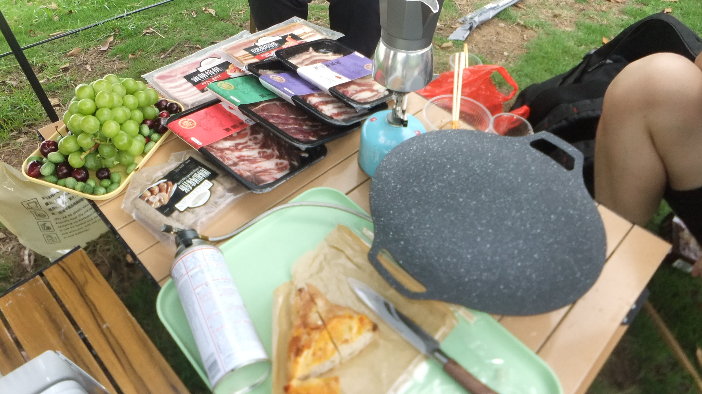
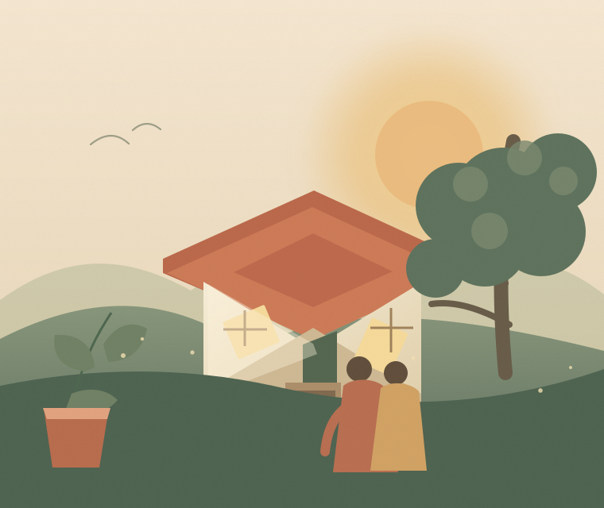
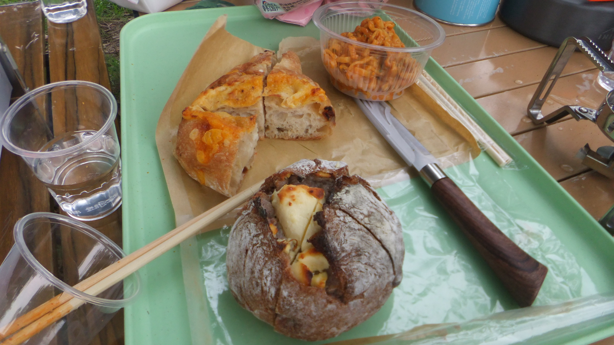
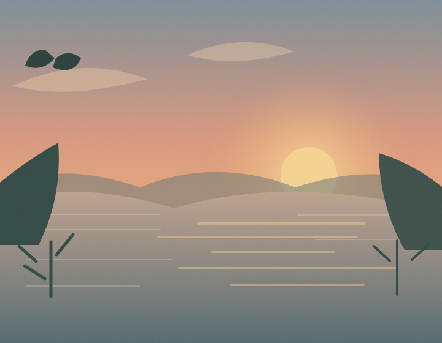
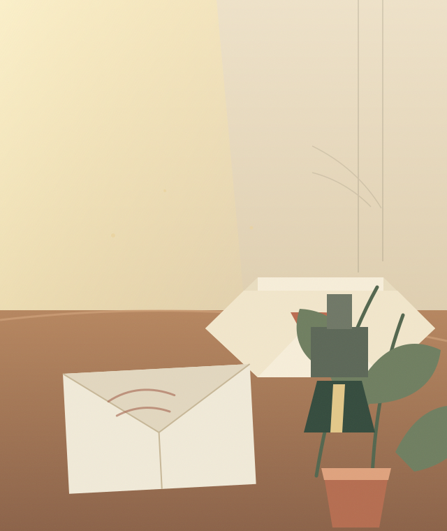

露营日，风和胃口都刚刚好
把水果、肉片和面包一股脑摆上桌，在草地上慢慢吃、慢慢聊。 这样热热闹闹的一餐，就是露营最好的部分。
下一顿，还要一起吃
这里是想和家人分享的小天地。不需要登录，打开就能看。
最近更新生活近况
挑了几件小事写下来。
愿你也从文字里，感受到家里的温度。

把水果、肉片和面包一股脑摆上桌，在草地上慢慢吃、慢慢聊。 这样热热闹闹的一餐，就是露营最好的部分。
下一顿，还要一起吃
外皮脆脆的，掰开还冒着热气。简单的一餐，也值得好好记住。

天边的云慢慢变成橘色，赶紧停下来拍给你们看。
生活相册
照片会记得那些
没能说完的话。
轻点图片，可以放大慢慢看

关于这个小站
这个小站没有复杂的功能，只是想给家人留一扇随时能打开的窗。 看看最近过得怎么样，分享一些没来得及打电话说的小事。
有时间，就常来这里坐坐。